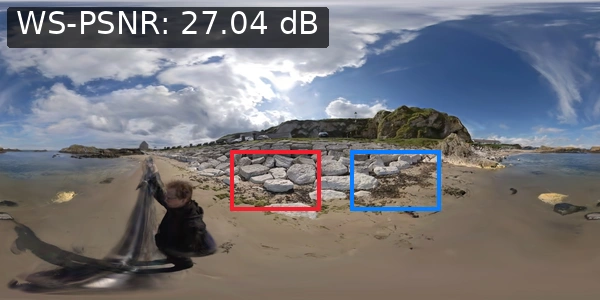
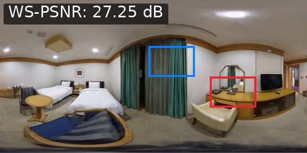
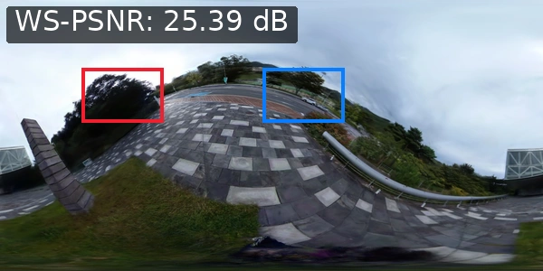
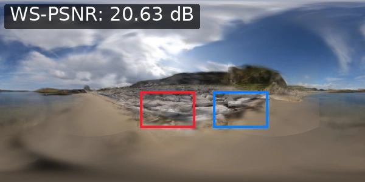
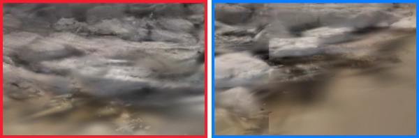
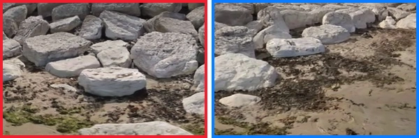

Initialize capacity
Start with energy-based SH degree allocation and use complete encoding to establish the actual bit budget.
PANORAMIC 3D GAUSSIAN COMPRESSION
Allocate appearance capacity where it matters.
Preserve panoramic detail under a fixed bit budget.



Native ERP reconstructions from the paper · Image labels report scene WS-PSNR.
01 / THE IDEA
A 360° image does not sample the sphere uniformly. Its compression objective should account for that.
We compress panoramic 3D Gaussian scenes using spherical rendering feedback. Instead of relying only on spherical harmonic (SH) coefficient energy, the encoder uses rendering gradients and conditional rate estimates to redistribute SH capacity. Every proposed exchange is checked by re-rendering and actual bitstream size.
All optimization happens during offline encoding. The resulting self-contained bitstream supports independent decoding and native equirectangular projection (ERP) rendering.
Ablation reductions are evaluated over shared actual-byte intervals. The two percentages use different baselines and are not additive.
02 / SEE THE DIFFERENCE
Explore the visual comparisons reported in the paper.



Images and enlarged regions are extracted from the manuscript figure, with its original annotations. These are static render comparisons.
03 / HOW IT WORKS
A closed loop connects appearance capacity to its value on the sphere.
Start with energy-based SH degree allocation and use complete encoding to establish the actual bit budget.
Spherical-area-weighted gradients and conditional rate estimates identify promising donor–receiver band swaps.
Accept only when distortion decreases, the encoded size stays within budget, and independent decoding succeeds.
ERP rows represent unequal surface areas on the sphere. Weighting each row by cos(latitude) aligns rendering distortion with spherical area. Candidate scores are recomputed after accepted updates; rejected proposals are rolled back.
04 / EXPERIMENTS
Scene-averaged operating points across 43 panoramic scenes.
Loading measured operating points…
Storage uses a logarithmic axis. Lines connect measured operating points as visual guides. External methods use representation and file-accounting conventions that are not fully aligned; these results are system-level comparisons.
| Method | Storage (MiB) ↓ | WS-PSNR (dB) ↑ | LPIPS ↓ | WS-SSIM ↑ |
|---|
360Roam (11) · OmniPhotos (11)
OmniScenes (9) · EgoNeRF-Ricoh360 (12)
NVIDIA RTX 3090 · 1920 × 960 ERP
Held-out test views · q ∈ {8, 9, 10, 12}
05 / RESOURCES
Inspect the implementation and explore the reported measurements.
The final manuscript will be available here.